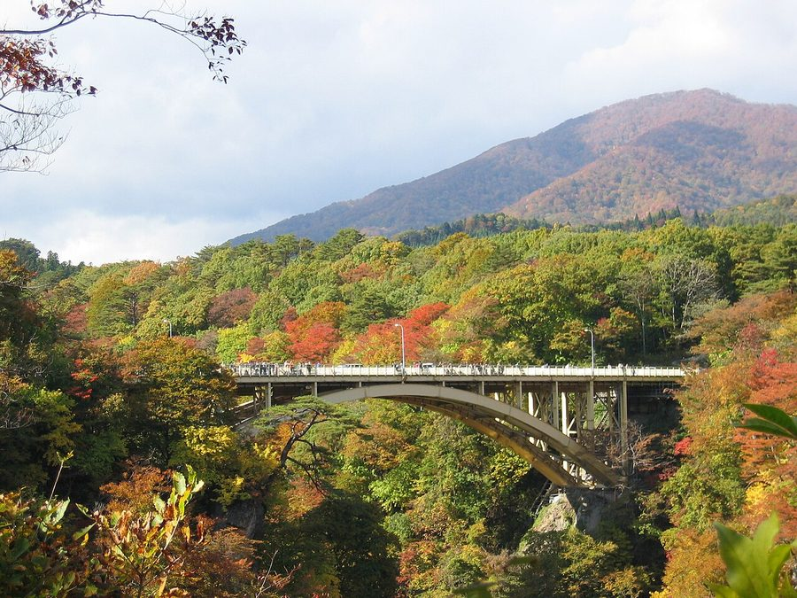
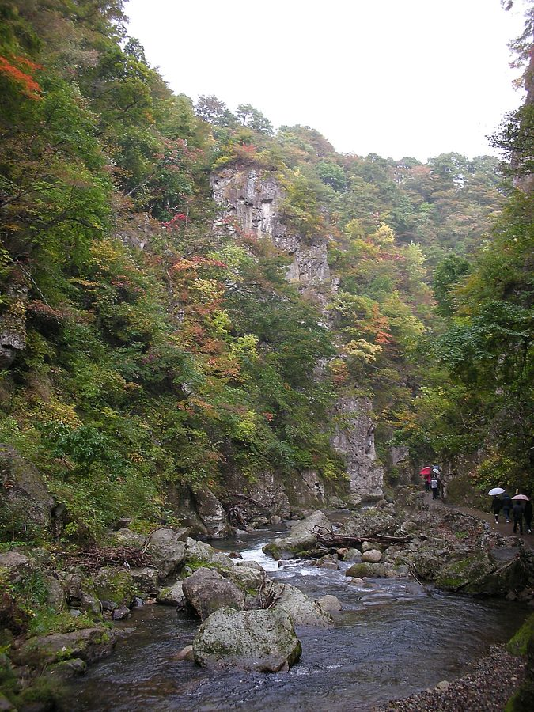

宮城県大崎市の日帰り温泉・銭湯・サウナ（56件）
寄り道スポット検索アプリ「ヨッテコ」の収録データから、宮城県大崎市の日帰り温泉・銭湯・サウナを営業時間・料金つきで一覧にしました（2026年8月時点）。
最も安いのは川渡温泉共同浴場（300円）。最も遅くまで入れるのは極楽湯 古川店（24:00まで）。朝風呂なら中山平温泉 蛇のゆ湯吉（6:00開店）。
宮城県大崎市はどんなまち？
数字で見る🔍宮城県大崎市
まちの横顔


- 地形と気候: 南は松島町、北は秋田県、西は山形県と接し、大崎平野を中心に広がる市です。西には奥羽山脈や荒雄岳、船形山がそびえ、そこから流れる江合川・鳴瀬川沿いの大崎耕土は、国連食糧農業機関から世界農業遺産に認定された穀倉地帯です。旧・鳴子町は特別豪雪地帯、旧・古川市と旧・岩出山町は豪雪地帯に指定されています。
- 観光: 日本百名湯に選ばれている鳴子温泉郷には、紅葉の時期に全国だけでなく海外からも観光客が訪れます。冬には東北有数のリゾート地オニコウベスキー場も賑わいます。日本初の100m級アーチ式コンクリートダム鳴子ダムは土木学会選奨土木遺産に登録され、春の「すだれ放流」が風物詩です。ラムサール条約登録湿地の化女沼・蕪栗沼は国内有数のマガンの飛来地でもあります。
- 特産と文化: 伊達政宗が居城とした岩出山城や、現存する日本最古の学問所である有備館など、歴史ある地域です。ずんだや凍り豆腐は伊達政宗が整備開発したとされ、ずんだ菓子は宮城県民のソウルフードとして親しまれています。大崎耕土ではササニシキ・ひとめぼれなどのブランド米が育ち、大豆の生産量は全国2位です。
寄り道充実度（全国偏差値）
偏差値・順位は、ヨッテコ収録データ（2026年8月時点・26,033件）を市区町村別に集計した施設数の全国分布（1,728市区町村）から毎回算出しています。カードを押すとカテゴリ別の分析に切り替わります。
日帰り温泉から見た宮城県大崎市
市内の日帰り温泉は56件、全国17位タイ（上位1.0%）。——寄り道できる湯の数は、全国でも上位クラス。
- 天然温泉を使う店は96%、全国水準（67%）の1.4倍。日本百名湯の鳴子温泉郷で知られ、紅葉の時期には海外からも観光客が訪れる市。沸かし湯ではなく源泉が前提で、温泉そのものがまちの資源になっています。
- サウナを備える店は14%。全国水準（52%）より控えめです。主役はあくまで湯船、という構成でしょうか。
- 21時を過ぎて入れる店は11%。全国水準（40%）より少なめです。明るいうちに入って早く休む、という時間割が見えてきます。
出典: 施設データ=ヨッテコ収録データ（26,033件・2026年8月時点）。偏差値・全国順位・全国水準は全1,728市区町村の分布から毎回算出。 / 人口=総務省「住民基本台帳に基づく人口、人口動態及び世帯数」（2026年1月1日現在） / 面積=国土地理院「全国都道府県市区町村別面積調」（2026年4月1日時点） / 森林率=農林水産省「2025年農林業センサス（農山村地域調査）」市区町村別林野率（2025年、林野率（林野面積÷総土地面積）） / 年平均気温=気象庁「平年値（1991-2020年）」。市区町村の代表点（国土交通省「大字・町丁目レベル位置参照情報」）から最も近い観測点の値 / まちの解説=日本語版Wikipedia「大崎市」（https://ja.wikipedia.org/wiki/大崎市、2026年8月21日取得）より作成（CC BY-SA 4.0） / 写真=Wikimedia Commons（各キャプションに作者・ライセンスを記載）
曜日別の営業施設数
| 月 | 火 | 水 | 木 | 金 | 土 | 日 |
|---|---|---|---|---|---|---|
| 54 | 54 | 54 | 52 | 55 | 55 | 56 |
木曜日が最も休みが多く（各4件が定休）、年中無休は51件です。※営業時間データのある56件で集計
入浴料金の分布（大人）
| 500円以下 | 12件 | |
| 501〜800円 | 20件 | |
| 801〜1,200円 | 6件 | |
| 1,201円以上 | 7件 |
料金が確認できた45件で集計。
施設一覧
| 施設 | 営業時間 | 料金（大人） |
|---|---|---|
| あすか旅館 天然温泉露天風呂 飲める温泉の宿として全国に知られている。天然温泉の木風呂でくつろぎ、お帰りには温泉水のお持ち帰りも可。 | 08:30〜16:00 | 600円 |
| いさぜん旅館 天然温泉露天風呂 | 10:00〜18:00 | 500円 |
| うなぎ湯の宿 琢ひで 天然温泉露天風呂 うなぎ湯として有名な、化粧水のようなとろりとした肌触りの極上の温泉。8つの湯船と特別室2つの専用風呂が楽しめる。 | 10:30〜14:00 | 1,100円 |
| ひがしたがのゆ 東多賀の湯 天然温泉 紅葉で有名な鳴子峡の上流地下1,000Mから湧き出た天然の温泉。乳白色で源泉かけ流しの質の良い湯が特徴。 | 10:30〜14:30（月・木休） | 1,000円 |
| ひまわり温泉 花おりの湯 天然温泉露天風呂サウナ | 11:00〜20:00 ※曜日により異なる | 750円 |
| サウナ&日帰り温泉 晴れ温泉 天然温泉露天風呂サウナ 鳴子では珍しいモール泉の源泉掛け流し100%。加水加温無しの天然温泉で、露天風呂とサウナが楽しめる。 | 09:00〜17:00（木休） | 650円 |
| サウナplus サウナ | 09:30〜21:00 | 2,480円 |
| ホテルオニコウベ別棟 源泉かけ流し 荒雄の湯 天然温泉露天風呂サウナ | 14:00〜18:00 | 1,500円 |
| ホテルニューあらお 天然温泉露天風呂 400年の歴史を持つ御殿の湯。源泉が凛々と沸き出すかけ流し100%の湯で、400年の時を越えて今も愛されている。 | 10:00〜21:00 | — |
| ホテル亀屋 天然温泉露天風呂 鳴子温泉の黒湯（重曹泉）が特徴。源泉かけ流しの露天風呂と展望大浴場で美肌効果が期待できる。 | 12:00〜14:00 | 800円 |
| リゾートパーク ホテルオニコウベ 天然温泉サウナ 鳴子温泉の奥座敷に位置するホテル。メタケイ酸250mg/kgの美肌泉質の温泉と新設バレルサウナが自慢。 | 10:00〜18:00 | 1,500円 |
| 中山平温泉 蛇のゆ湯吉 天然温泉 | 06:00〜21:00 | 800円 |
| 久田旅館 天然温泉露天風呂 2種の源泉が楽しめるのが特徴。内湯では純重曹泉、露天風呂では重曹硫黄泉を源泉かけ流しで堪能。 | 11:30〜17:00 | 600円 |
| 伝統の宿 旅館 すがわら 天然温泉露天風呂サウナ | 10:30〜17:00 | 500円 |
| 初音旅館 天然温泉 null | 10:30〜15:00 | 5,000円 |
| 加護坊温泉 さくらの湯 天然温泉露天風呂サウナ | 10:00〜22:00 | 700円 |
| 古来湯治 西多賀旅館 天然温泉 小規模な湯治宿として長期滞在や一人旅に対応。源泉かけ流しの温泉で知られ、昔ながらの設備でくつろげる。 | 11:00〜14:00 | 5,000円 |
| 吹上温泉 峯雲閣 滝つぼ温泉 天然温泉 | 10:00〜13:00 | 500円 |
| 吹上高原 すぱ鬼首の湯 天然温泉露天風呂 | 10:00〜18:00 | 600円 |
| 四季の宿 花渕荘 天然温泉露天風呂 花渕山の大自然に囲まれた1,000年以上の歴史を持つ温泉。庭園風呂と貸切露天風呂が特徴で、四季の景色を眺めながら楽しめる… | 09:00〜21:00 | 700円 |
| 国民宿舎 ホテルたきしま 天然温泉 | 09:00〜17:00 | 700円 |
| 大江戸温泉物語 鳴子温泉 ますや 天然温泉露天風呂 | 07:00〜10:00 | 1,070円 |
| 大江戸温泉物語 鳴子温泉 幸雲閣 天然温泉露天風呂 大江戸温泉物語グループの施設。日帰り入浴はもちろん、入浴付きディナーバイキングプランも利用可能。 | 07:00〜24:00 | 1,070円 |
| 大畑共同浴場 天然温泉 | 09:00〜18:00 | — |
| 山ふところの宿 みやま 天然温泉 川渡温泉の山里の小さな湯宿。単純温泉のぬるめの湯が特徴で、源泉かけ流し。 | 00:00〜24:00 | — |
| 川渡温泉 藤島旅館 天然温泉 昔から「脚気の川渡」と名高い名湯。4つの源泉をブレンドしたまろやかなお湯が特徴で、天然温泉だけの浴槽が4箇所ある。 | 07:00〜23:00 | 500円 |
| 川渡温泉共同浴場 天然温泉 | 09:00〜17:00 | 300円 |
| 旅館 なんぶ屋 天然温泉露天風呂 | 10:00〜18:00（水休） | — |
| 旅館 三之亟湯 天然温泉 小規模な湯治宿。お肌つるつる美肌の湯として知られ、泉質は女性に人気のある純重曹泉。 | 11:00〜20:00 | 500円 |
| 旅館 岡崎荘 天然温泉露天風呂 2024年12月20日開業の新築湯治旅館。源泉掛け流し、露天風呂完備の自炊宿。 | 08:00〜17:00 | 1,150円 |
| 旅館 弁天閣 天然温泉露天風呂 鳴子温泉の高台に立つ旅館。源泉かけ流しの貸切露天風呂と展望大浴場で、美肌の湯を楽しめる。 | 11:00〜15:00 | 800円 |
| 旅館ゆさ 天然温泉露天風呂 | 10:00〜16:00 | 700円 |
| 東五郎の湯 高東旅館 天然温泉 null | 11:00〜15:00 | — |
| 東鳴子温泉 勘七湯 天然温泉露天風呂 天明4年（1784年）創業の歴史ある東鳴子温泉の旅館。2つの源泉が24時間楽しめ、源泉かけ流しで知られている。 | 08:00〜20:00 | 600円 |
| 東鳴子温泉 湯治宿 高友旅館 天然温泉 | 10:00〜15:00 | — |
| 東鳴子温泉 馬場温泉旅館 天然温泉 | 11:00〜16:00 ※曜日により異なる | 600円 |
| 極楽湯 古川店 露天風呂サウナ 1996年に全国展開するスーパー銭湯の第一号店としてオープンした極楽湯古川店。広くゆったりくつろげるお風呂と駐車場を備え… | 08:00〜24:00 | 700円 |
| 湯あみの宿 ぬまくら 天然温泉露天風呂 源泉からの湧出量豊富な家庭的な湯宿。源泉かけ流し100%で、平均温度46度とかなり熱めの温泉。 | 10:00〜20:00 | 1,000円 |
| 神の湯ヒュッゲ KAWATABI 天然温泉 川渡温泉の旧板垣旅館をリニューアル。源泉かけ流しの含硫黄温泉を日帰り入浴で楽しめる。 | 10:00〜17:00 | 800円 |
| 豆坂温泉 三峰荘 天然温泉露天風呂 | 10:00〜21:00 | 700円 |
| 赤這温泉 阿部旅館 天然温泉 東鳴子にある家族経営の小さな湯治宿。内湯が2つあり、源泉かけ流しで知られている。 | 09:00〜14:00 | 500円 |
| 越後屋旅館 天然温泉 川渡温泉の二つの源泉を湯めぐりで楽しめる小さな宿。含硫黄泉と炭酸水素塩泉の対比が特徴。 | 10:00〜15:00 ※曜日により異なる | 800円 |
| 露天風呂の宿 とどろき旅館 天然温泉露天風呂 轟温泉の中央に位置し、鳴子ダム荒雄湖の最上流のほとりにある露天風呂の宿。四季折々の自然を眺めながら温泉が楽しめる。 | 10:00〜14:00 | 600円 |
| 馬場温泉 馬場の湯（外湯） 天然温泉 | 10:00〜17:00 | 300円 |
| 鬼首温泉 せんとう目の湯 天然温泉露天風呂 | 10:00〜19:00 | 500円 |
| 鬼首温泉 旅館元湯 天然温泉 | 09:00〜17:00 | — |
| 鳴子やすらぎ荘 天然温泉露天風呂 中山平温泉の老舗宿。美肌の湯として知られる含硫黄温泉の露天風呂と大浴場が自慢。 | 12:00〜16:00 | — |
| 鳴子ホテル 天然温泉露天風呂 | 11:00〜15:00 | 1,500円 |
| 鳴子・中山平温泉 しんとろの湯 天然温泉 中山平温泉の美人の湯として知られ、アルカリ度の高いぬるぬるした感触が特徴。5種の豊富な源泉が楽しめ、ウナギ湯という名でも… | 09:00〜20:30 | 500円 |
| 鳴子旅館 天然温泉 鳴子温泉の古くから「美人の湯」として愛される重曹泉を源泉かけ流しで提供。 | 12:00〜14:00 | 500円 |
| 鳴子温泉 扇屋 天然温泉露天風呂 鳴子温泉の「やはたの湯」として古くから親しまれる小宿。源泉かけ流しの自家源泉と杉の浴槽が自慢。 | 12:00〜14:30 | — |
| 鳴子温泉 早稲田桟敷湯 天然温泉 昭和23年に早稲田大学の学生がボーリング実習で掘削した温泉。黄漆喰の特徴的な建物が目を引き、鳴子温泉街の中でも不思議な空… | 09:00〜21:30 | 660円 |
| 鳴子温泉 村本旅館 天然温泉 | 13:00〜17:00 | — |
| 鳴子温泉 滝の湯 天然温泉 鳴子温泉神社の御神湯として千年の歴史を持つ古湯で、白濁したお湯と板張りの浴槽で昔ながらの懐かしい雰囲気が漂う公衆浴場。 | 07:30〜21:00 | 300円 |
| 鳴子温泉郷 寿苑 天然温泉 | 09:00〜18:00 | — |
| 鳴子観光ホテル 天然温泉露天風呂 | 12:00〜15:00 | 1,500円 |